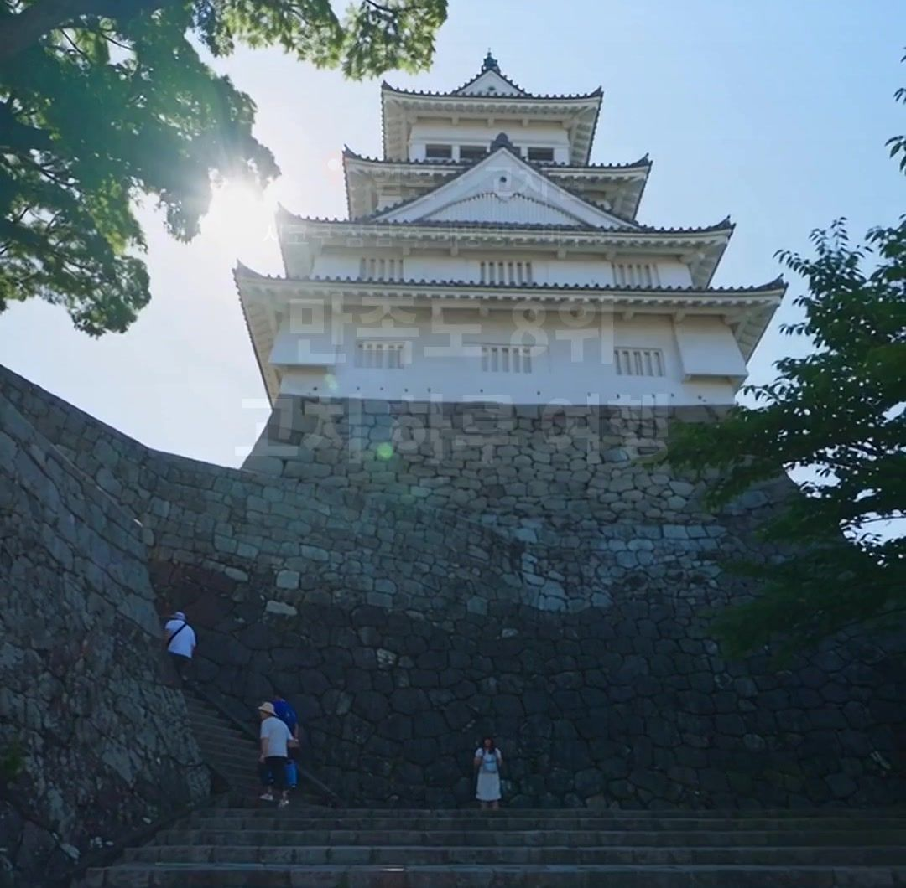
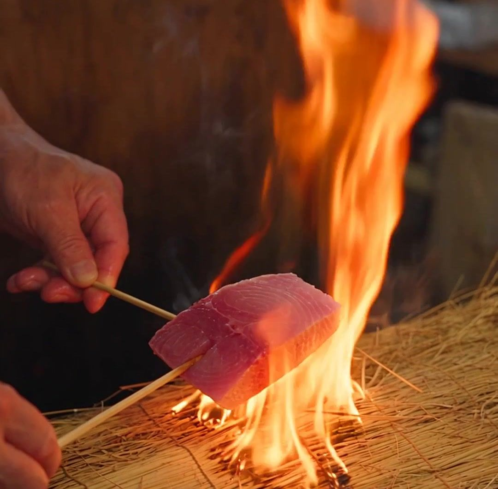
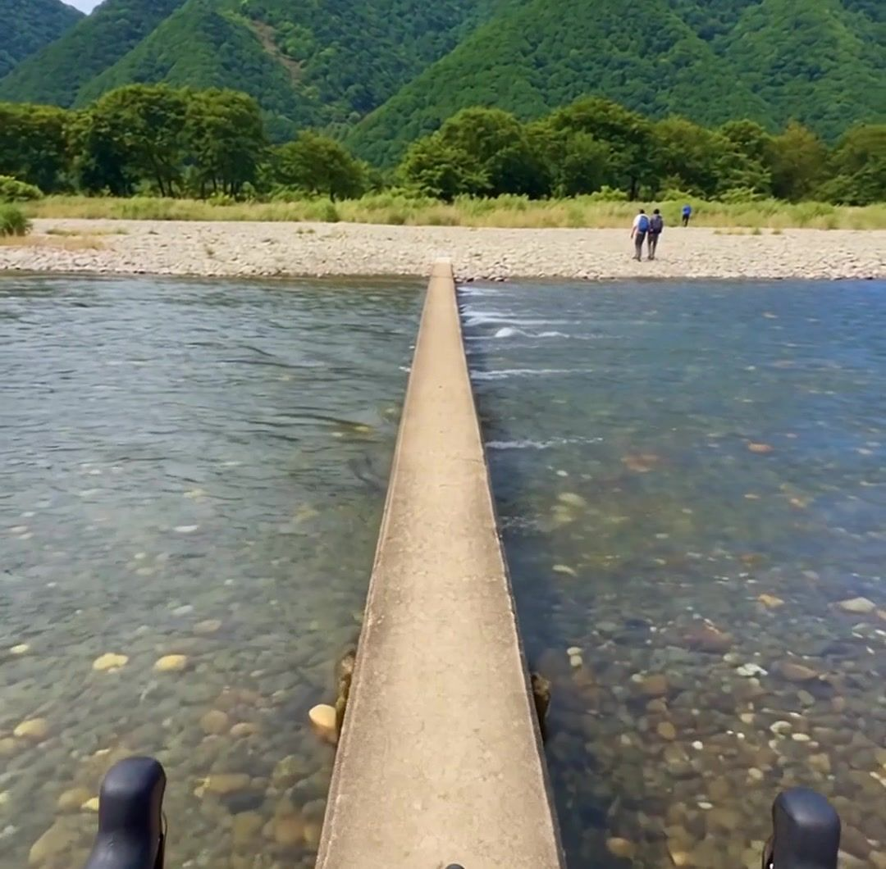
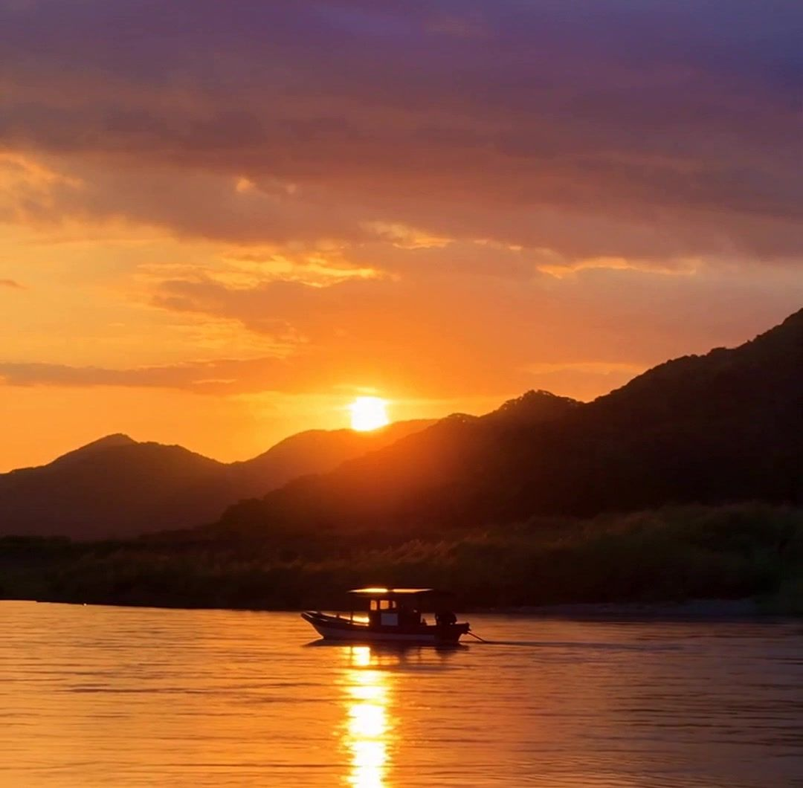

일본에서 가장 맑은 강이
흐르는 곳, 고치
시코쿠 남쪽, 태평양을 마주한 고치. '일본 최후의 청류' 시만토강과 짚불구이 가쓰오 타타키를 만나는 1박 2일 코스예요.
📢 이 페이지에는 제휴 링크가 포함될 수 있어요. 링크로 예약하시면 1분여행이 일정 수수료를 받을 수 있지만, 예약하시는 가격은 같아요.
한눈에 보기
만족도2026 자란 조사 종합 만족도 공동 8위
추천 일정1박 2일 · 1일차 고치 시내, 2일차 시만토강
가는 법도쿄에서 고치 공항까지 비행기 약 1시간 20분
시만토강고치역 → 나카무라역 특급 아시즈리 약 1시간 40분
꼭 먹을 것짚불구이 가쓰오 타타키
💡 영상은 하루 코스로 압축했지만, 시만토강은 고치 시내에서 특급으로 약 1시간 40분 거리예요. 실제로는 1박 2일로 나눠 가는 걸 추천해요.
DAY 1 · 고치 시내
- 09:00고치성
천수와 본성 어전이 함께 남아 있는 성. 천수 입장 9~17시, 성인 420엔(고교생 이하 무료)
- 12:00히로메 시장
60여 개 가게가 모인 실내 시장. 가게에서 음식을 사서 공용 테이블에서 먹어요
- 15:00가쓰라하마 해변
고치역에서 버스 약 35분. 물살이 세서 수영은 금지예요


DAY 2 · 시만토강
- 오전고치역 → 나카무라역
특급 아시즈리로 약 1시간 40분
- 오후시만토강 침하교
난간 없이 낮게 놓인 다리. 물이 불면 잠기도록 만들어졌어요
- 늦은 오후놀잇배 → 석양
나무배를 타고 강을 내려가다 해 질 녘 마무리


🍽️ 맛집
고치 시내 · 히로메 시장
묘진마루 히로메 시장점
짚불구이 소금 타타키가 시작된 곳으로 알려진 가게. 영업 월~토 11~21시, 일 10~20시 · 카드 불가
고치 시내
묘진마루 오비야마치점
같은 묘진마루의 일반 식당. 앉아서 여유 있게 먹고 싶을 때
시만토강
시만토야
강가의 50년 넘은 가게. 2층 식당에서 자연산 장어와 민물새우 요리. 1인 3,000~4,000엔대 · 휴무일은 방문 전 확인
🏨 숙소
1일차 · 고치 시내
2일차 · 시만토
※ 운영 시간과 요금은 현지 사정으로 바뀔 수 있어요. 방문 전에 공식 정보를 한 번 더 확인하세요. 사진은 AI로 만든 영상의 장면이에요.
← TOP 10 목록으로